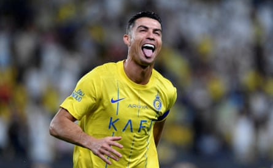
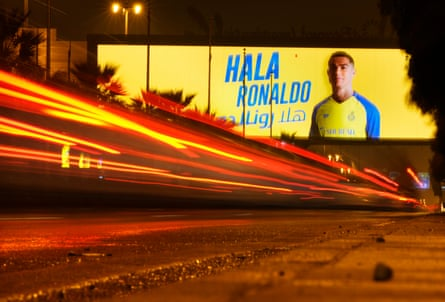

T he winners of next season’s AFC Champions League Two, Asia’s second-tier club competition, will receive about £1.8m. The winners of the Saudi King’s Cup will receive just over £1m. Prize money for the Saudi Pro League is not disclosed, but by the most recent available figures (for 2022-23) is in roughly the same area. Weekly attendances at the King Saud University Stadium, where top-tier ticket prices start at about £12, range between 10,000 and 25,000, although of course you also have to factor in pie and programme sales above that.
And so you really have to applaud Al-Nassr’s ambition in handing an estimated £492m to Cristiano Ronaldo over the next two years . Even if they sweep the board at domestic level, if they fight their way past Istiklol of Tajikistan’s 1xBet Higher League and Al-Wehdat of the Jordanian Pro League, if they extract maximum value from merch and sponsorships, you still struggle to see how they can cover a basic salary that comes to £488,000 a day, even before the bonuses and blandishments that will push the total package well beyond that.
Cristiano Ronaldo celebrates scoring for Al-Nassr against Al-Wehda in May.Photograph: Reuters
According to reports, the deal also involves Ronaldo taking a 15% ownership stake in Al-Nassr , extra incentives for winning the Pro League or the Golden Boot, a private jet allowance, 16 full-time staff including two chefs and three gardeners, and a bonus for every time he successfully presses an opposition player. Last one was a joke, obvs. And amid the stultifying assault of numbers, Ronaldo’s new contract – announced to great fanfare last week – marks a significant shift in the evolution of the superstar athlete, a further blurring of the lines between what we used to call “sport” and what we used to call “the other stuff”.
The first question to put: what exactly is Saudi Arabia getting for its money? Because of course Al-Nassr are a majority fund-owned club, an arm of the Saudi state, which is funnelling untold riches into its domestic league free from the encumbrance of cost controls or financial fair play rules. Ronaldo himself is in effect a Saudi employee, albeit one who has enjoyed much better fortune then most migrant workers who have entered the country in recent years.
On the pitch, Ronaldo’s influence has been highly visible: 99 goals in 111 games under four coaches. Give him a half-chance in a tight space and even at the age of 40, there are still few players you would back over him. At the same time Al-Nassr have won no major trophies since his arrival and the club’s two other big attacking talents, Jhon Durán and Sadio Mané, have found themselves overshadowed to such an extent that both may leave this summer. Let’s charitably describe this one as: jury out.
In recent months there was talk of Ronaldo getting a short-term deal to play in the Club World Cup, a competition that would seem perfect for him: based entirely around celebrity power, influencer fame and a distinct lack of running. Politically and commercially, there was literally no reason for this not to happen. And so we can conclude that while many clubs were interested in his star wattage, none were prepared to pay the going rate to remould their entire system around a 40-year-old striker who lost his last half-yard of pace in about 2017.
But of course these days what Ronaldo can do on a football pitch is but a fraction of his total appeal. In an age when power itself is being reimagined along the lines of social media clout, when the attention economy and the actual economy are rapidly converging into one and the same thing, the fact Ronaldo is the most followed person on Instagram – and the third-most followed on X behind Elon Musk and Barack Obama – matters. In a way Ronaldo’s fame renders him a kind of one-man city state, an influencer first and an athlete second, his goals and assists entirely tangential to the eyeballs he can garner in the process.
What we have, in essence, is the professional athlete reimagined as a kind of plutocratic demigod, able to construct entire new realities around themselves. One in which the 2034 World Cup in Saudi Arabia will be “the most beautiful ever”, or where the Saudi Pro League is “one of the top five leagues in the world”, as he recently put it. “It’s highly competitive, and those who don’t know that simply haven’t played here.” Fundamentally, this is not true on any measure: Opta ranks the Saudi Pro League as the world’s 29th best. And of course by his own criteria, Ronaldo would have had to play in all the others in order to make a reasoned assessment. But when you have 659 million Instagram followers, perhaps whatever you say becomes true simply by saying it.
Which is not to say the football is an irrelevance. Football is clearly still inherent to Ronaldo’s self-image, albeit these days more as an adjunct to his power than as the source of it. Ronaldo still plays football in the same way that Donald Trump plays golf: as part of a broader cult of personality, something to get photographed doing, content for the feed. A branding exercise stripped entirely of context or objective judgment, complete with massaged numbers and a coterie of obedient applauding acolytes. As is the continuing fixation on his physique, the positioning of Ronaldo as a kind of Übermensch , a transcendent individual, a higher form of biology, albeit one that still possesses an unerring ability to put free-kicks straight into the wall.
And so Al-Nassr (and to a lesser extent the Portuguese national team) are no longer paying for Ronaldo the footballer. What they’re buying is Ronaldo the spiritual leader, the attention machine, the aura, the abdominals, the soft-power influence. They’re buying a place on his grid, the opportunity to allow one of the world’s most famous men to do their bidding. Perhaps it helps to think of his new contract as a kind of trade deal, a strategic alliance between two cynical regimes drunk on their own power and with largely congruent social views.
A billboard welcomes Cristiano Ronaldo to Saudi Arabia after he joined Al-Nassr at the end of December 2022.Photograph: Amr Nabil/AP
“I belong to Saudi Arabia,” Ronaldo stated proudly on announcing his new contract last week. And of course many star athletes in many sports have succumbed to the lure of the Saudi riyal, and will continue to do so. But there is a tonal difference between taking the money of a rogue state and actively advocating for them on the broadest possible stage. For years we have spoken of Saudi investment as a kind of moral dilemma, a fine balance of pecuniary motives, reputational concerns and human rights. For Ronaldo, it is clear that no such dilemma exists.
- Do you have an opinion on the issues raised in this article? If you would like to submit a response of up to 300 words by email to be considered for publication in our letters section, please click here .